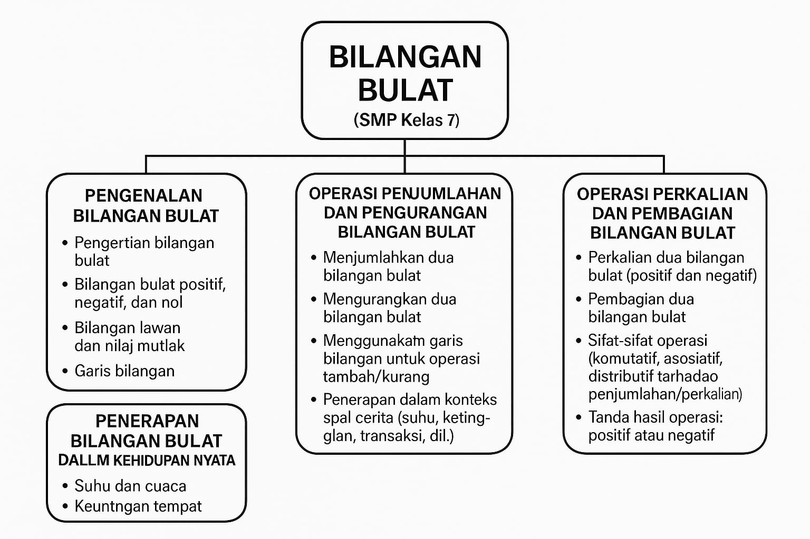
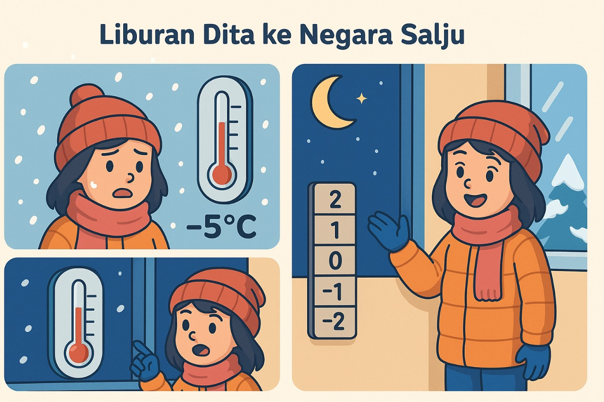
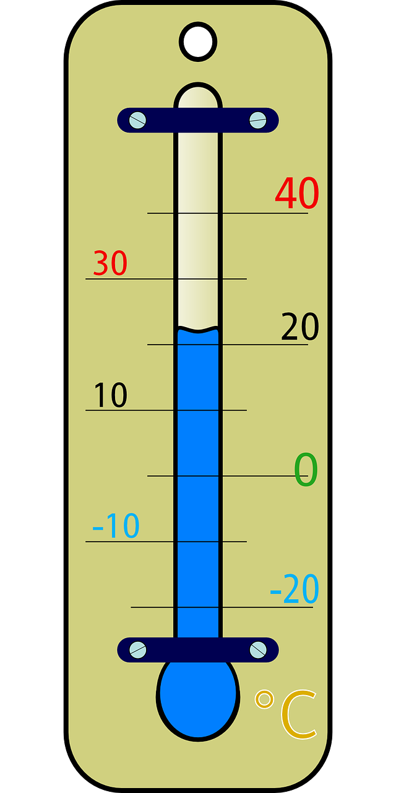
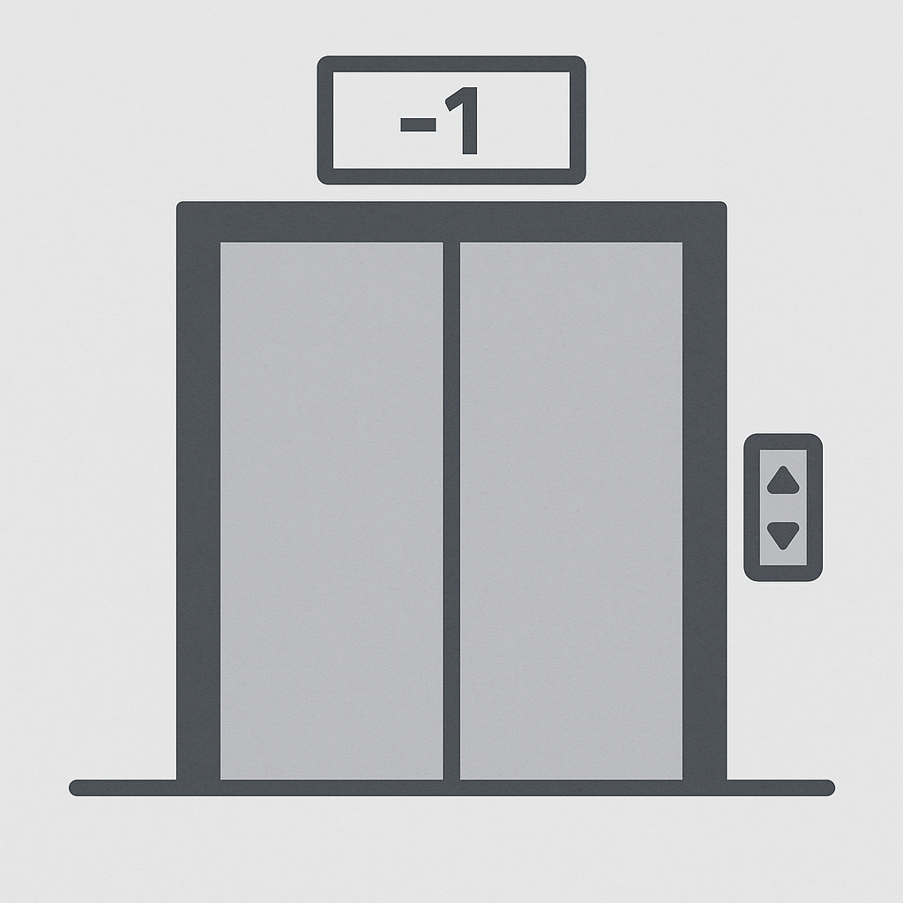
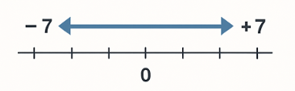
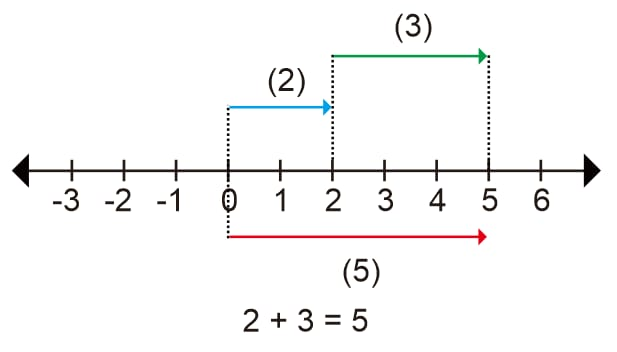
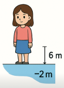
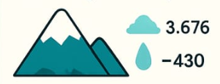
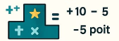

Pelajari konsep matematika khususnya bilangan bulat dengan cara interaktif dan menyenangkan!
Mulai Belajar| Mata Pelajaran | Matematika |
|---|---|
| Materi Pokok/Elemen | Bilangan Bulat | Fase | D |
| Kelas/Semester | VII/Semester I |
| Tahun Ajaran | 2024/2025 |
| Disusun oleh: | Kelompok 5:
|
Di akhir fase D, peserta didik dapat membaca, menuliskan, membandingkan, dan melakukan operasi aritmetika pada bilangan bulat, serta menggunakannya dalam menyelesaikan masalah kontekstual. Peserta didik dapat memberikan estimasi hasil operasi pada bilangan bulat dengan alasan yang masuk akal.


Dita baru pertama kali bepergian ke luar negeri bersama keluarganya. Mereka memilih liburan musim dingin ke sebuah negara bersalju. Setibanya di sana, Dita melihat termometer di luar rumah menunjukkan angka 5°C. “Wah, dingin juga ya,” gumamnya sambil memeluk jaketnya. Malamnya, ia kembali melihat termometer, dan terkejut melihat angkanya berubah menjadi –3°C. “Kok bisa minus? Berarti lebih dingin dari tadi dong!” katanya heran.
Keesokan harinya, mereka menginap di sebuah hotel bertingkat. Saat hendak ke kolam renang bawah tanah, Dita menekan tombol lift bertuliskan –2. “Wah, ada lantai minus juga ya,” ucapnya penasaran.
Dari pengalaman itu, Dita mulai berpikir, ternyata dalam kehidupan sehari-hari tidak semua angka selalu positif. Ada angka negatif juga! Nah, itulah yang akan kita pelajari: bilangan bulat.
Bilangan bulat merupakan himpunan bilangan yang terdiri dari bilangan negatif, nol, dan bilangan positif. Bilangan ini digunakan untuk mewakili nilai yang bisa bertambah, berkurang, atau tetap, tergantung pada konteks penggunaannya.
Secara matematis, bilangan bulat dilambangkan dengan huruf Z (dari bahasa Jerman Zahlen, yang berarti angka). Himpunan bilangan bulat dituliskan sebagai:


Bilangan bulat banyak dijumpai dalam kehidupan sehari-hari, seperti suhu di bawah nol, lantai bawah tanah, saldo negatif, dan sebagainya.
Bilangan bulat positif adalah bilangan yang lebih besar dari nol. Bilangan ini digunakan untuk menyatakan penambahan atau kenaikan suatu nilai. Contoh bilangan bulat positif adalah 1, 2, 3, 4, dan seterusnya. Dalam kehidupan sehari-hari, bilangan ini sering digunakan untuk menunjukkan ketinggian suatu tempat, jumlah benda, kenaikan suhu, dan lain-lain.
Bilangan nol bersifat netral, yaitu tidak positif dan tidak negatif. Bilangan ini digunakan untuk menyatakan keadaan awal, tidak bertambah maupun berkurang. Misalnya, jika seseorang tidak memiliki utang maupun tabungan, maka jumlah uangnya adalah nol.
Bilangan bulat negatif adalah bilangan yang lebih kecil dari nol. Bilangan ini digunakan untuk menyatakan penurunan atau pengurangan suatu nilai. Contohnya adalah –1, –2, –3, dan seterusnya. Dalam kehidupan nyata, bilangan ini bisa ditemukan dalam suhu dingin (di bawah nol), utang, penurunan nilai saham, dan lantai bawah tanah.
Bilangan lawan adalah dua bilangan yang memiliki jarak yang sama dari nol, tetapi dengan tanda yang berbeda. Bilangan positif memiliki lawan berupa bilangan negatif, begitu pula sebaliknya. Contohnya, lawan dari +7 adalah –7, dan lawan dari –10 adalah +10.

Konsep bilangan lawan sangat penting dalam operasi penjumlahan dan pengurangan bilangan bulat karena berfungsi untuk menyeimbangkan nilai.
Nilai mutlak adalah jarak suatu bilangan dari nol pada garis bilangan, tanpa memperhatikan arah atau tanda bilangan tersebut. Nilai mutlak dari sebuah bilangan selalu bernilai positif atau nol.
Notasi nilai mutlak ditulis dengan dua garis tegak di sisi bilangan, misalnya: |−4| = 4 dan |5| = 5.
Dalam konteks kehidupan sehari-hari, nilai mutlak bisa digunakan untuk menghitung selisih suhu, selisih jarak, atau perbedaan nilai tanpa memedulikan arahnya.
Garis bilangan adalah representasi visual dari bilangan bulat yang digambarkan secara horizontal. Di tengah terdapat angka nol. Di sebelah kanan nol terdapat bilangan bulat positif yang semakin besar ke kanan, dan di sebelah kiri nol terdapat bilangan bulat negatif yang semakin kecil ke kiri. Garis bilangan sangat membantu dalam memahami perbandingan dan operasi bilangan, seperti penjumlahan dan pengurangan. Contohnya, pada garis bilangan, angka –3 terletak di sebelah kiri angka 2, artinya –3 lebih kecil dari 2.
Bilangan bulat terdiri dari bilangan positif, nol, dan negatif. Contoh: ... -3, -2, -1, 0, 1, 2, 3 ...dst.


Perkalian adalah operasi penjumlahan berulang. Hasil perkalian dua bilangan bulat dipengaruhi oleh tanda kedua bilangan tersebut.
Contoh:
3 × 4 = 12
(–3) × (–4) = 12
(–3) × 4 = –12
3 × (–4) = –12
Pembagian adalah kebalikan dari perkalian. Sama seperti perkalian, tanda hasil pembagian tergantung pada tanda bilangan yang digunakan.
Contoh:
12 ÷ 3 = 4
(–12) ÷ (–3) = 4
(–12) ÷ 3 = –4
12 ÷ (–3) = –4
a. Komutatif (Hanya untuk Perkalian)
Urutan bilangan tidak mempengaruhi hasil.
a × b = b × a
Contoh: 4 × (–2) = –8 dan (–2) × 4 = –8
b. Asosiatif (Hanya untuk Perkalian)
Pengelompokan bilangan tidak mempengaruhi hasil.
(a × b) × c = a × (b × c)
Contoh: (–2 × 3) × 4 = –6 × 4 = –24 dan –2 × (3 × 4) = –2 × 12 = –24
c. Distributif terhadap Penjumlahan
Perkalian menyebar terhadap penjumlahan.
a × (b + c) = a × b + a × c
Contoh: 2 × (–3 + 5) = 2 × 2 = 4 dan 2 × (–3) + 2 × 5 = –6 + 10 = 4
| Operasi | Bilangan 1 | Bilangan 2 | Hasil Tanda |
|---|---|---|---|
| Perkalian / Pembagian | Positif | Positif | Positif |
| Perkalian / Pembagian | Negatif | Negatif | Positif |
| Perkalian / Pembagian | Positif | Negatif | Negatif |
| Perkalian / Pembagian | Negatif | Positif | Negatif |
Bilangan bulat bukan hanya dipelajari di kelas, tetapi juga sering muncul dalam kehidupan sehari-hari. Penerapan bilangan bulat membantu kita memahami dan menyelesaikan masalah yang berkaitan dengan suhu, ketinggian, transaksi, dan sebagainya. Berikut beberapa contoh penerapannya:
Dalam pengukuran suhu, bilangan bulat digunakan untuk menunjukkan suhu di atas atau di bawah nol. Misalnya, suhu di musim dingin bisa mencapai –5°C, yang menunjukkan kondisi lebih dingin dari 0°C. Sebaliknya, suhu siang hari bisa mencapai 35°C, yang berarti sangat panas. Dengan memahami bilangan bulat, kita bisa membandingkan dan menganalisis perubahan suhu dalam kehidupan sehari-hari.
Suhu udara diukur dalam satuan derajat Celcius (°C). Suhu bisa positif (lebih dari 0°C), nol, atau negatif (kurang dari 0°C). Contoh:Suhu di Jakarta adalah 32°C → bilangan bulat positif. Suhu di negara bersalju seperti Rusia bisa mencapai -20°C → bilangan bulat negatif. Suhu 0°C adalah titik beku air, dan menjadi batas antara suhu positif dan negatif.
Dalam geografi atau kegiatan pendakian, bilangan bulat digunakan untuk menunjukkan ketinggian suatu tempat. Konsep bilangan bulat memudahkan kita memahami perbedaan ketinggian tersebut.

Ketinggian biasanya diukur dari permukaan laut (0 meter). Tempat di atas permukaan laut memiliki ketinggian positif. Tempat di bawah permukaan laut memiliki ketinggian negatif. Contoh: Puncak Gunung Semeru: +3.676 meter → di atas permukaan laut.Laut Mati: -430 meter → di bawah permukaan laut.
Dalam dunia keuangan, bilangan bulat digunakan untuk menggambarkan kondisi keuangan seseorang atau perusahaan. Misalnya, saldo positif menunjukkan tabungan, sedangkan saldo negatif (–) berarti utang. Jika seseorang memiliki saldo –50.000, artinya ia sedang mengalami kekurangan atau utang sebesar Rp50.000. Bilangan bulat membantu mencatat dan menganalisis transaksi keuangan secara akurat.
Atau Dalam kegiatan jual beli atau bisnis, saldo positif juga dapat ditunjukan sebagai keuntungan yang dinyatakan dengan bilangan positif, sedangkan kerugian dengan bilangan negatif.Contoh: Untung Rp20.000 → +20.000 Rugi Rp15.000 → -15.000
Dalam pertandingan olahraga, bilangan bulat digunakan untuk mencatat skor atau poin. Skor positif menunjukkan keuntungan atau kemenangan, sedangkan skor negatif bisa digunakan untuk menggambarkan penalti atau pengurangan poin. Misalnya, dalam permainan catur atau kuis, peserta bisa mendapatkan –2 poin jika menjawab salah, dan +5 poin jika menjawab benar. Konsep bilangan bulat membantu menghitung total skor secara akurat dan adil.

Dalam beberapa permainan atau pertandingan, skor bisa bertambah (positif) atau berkurang (negatif), tergantung dari hasil permainan. Contoh: Dalam permainan kuis, jawaban benar diberi +10 poin dan jawaban salah dikurangi 5 poin.
Video ini membahas materi bilangan bulat dengan penjelasan yang jelas dan mudah dipahami. Cocok untuk kamu yang ingin memahami konsep dasar secara menyenangkan dan tanpa ribet. Yuk, simak sampai selesai dan tingkatkan kemampuan matematikamu! 📘✨